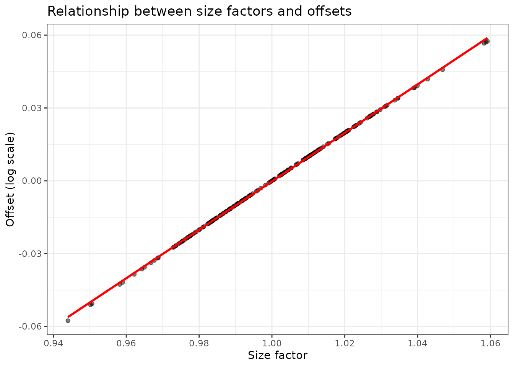
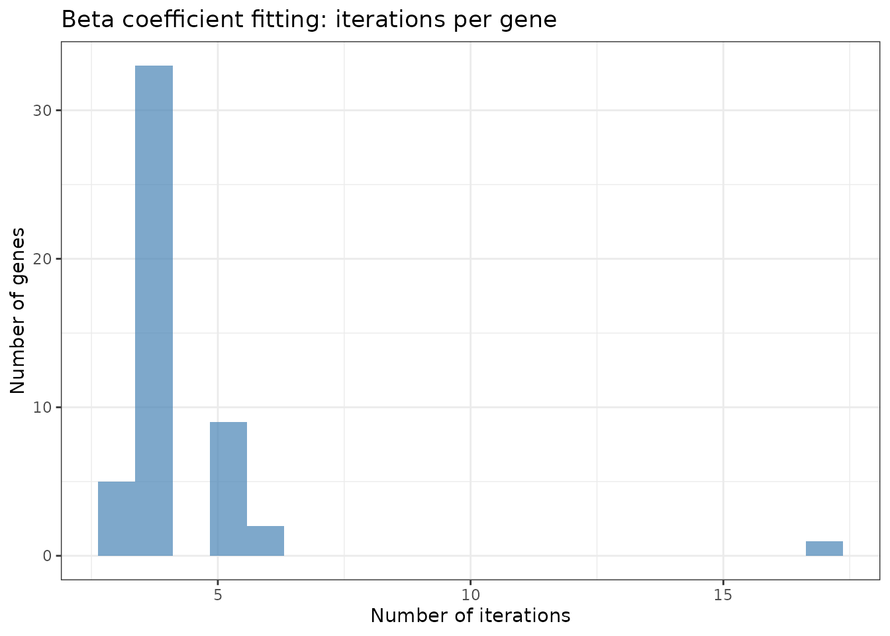

devil statistical model, CPU and GPU implementation
Source:vignettes/devil_GPU_v_CPU.Rmd
devil_GPU_v_CPU.RmdIntroduction
The devil package implements negative binomial regression for count data, particularly designed for single-cell RNA-seq analysis. This vignette explains:
- The statistical model and fitting procedure
- Shared computational steps (CPU and GPU)
- CPU implementation with practical examples
- GPU implementation (conceptual overview)
- When to use CPU vs GPU
- Performance optimization strategies
The Statistical Model
Devil fits a negative binomial generalized linear model for each gene:
where:
- is the count for gene in cell
- is the expected count
- is the size factor for cell (normalization)
- is the design matrix row for cell (covariates)
- is the coefficient vector for gene
- is the overdispersion parameter for gene
The model accounts for:
- Technical variation via size factors
- Biological covariates via the design matrix
- Overdispersion beyond Poisson variation
Common Steps (CPU and GPU)
Both implementations share the following preprocessing steps:
1. Size Factor Calculation
Size factors normalize for differences in sequencing depth across cells.
# Simulate example data
set.seed(123)
n_genes <- 500
n_cells <- 200
counts <- matrix(
rnbinom(n_genes * n_cells, mu = 20, size = 5),
nrow = n_genes, ncol = n_cells
)
rownames(counts) <- paste0("Gene", seq_len(n_genes))
colnames(counts) <- paste0("Cell", seq_len(n_cells))
# Create design matrix (two groups)
group <- factor(rep(c("Control", "Treatment"), each = n_cells/2))
design <- model.matrix(~ group)Available normalization methods:
# Method 1: Geometric mean normalization (default, fast)
fit_normed <- fit_devil(
input_matrix = counts,
design_matrix = design,
size_factors = "normed_sum",
verbose = FALSE
)
# Method 2: Psi-normalization (robust to highly variable genes)
fit_psi <- fit_devil(
input_matrix = counts,
design_matrix = design,
size_factors = "psinorm",
verbose = FALSE
)
# Method 3: No normalization (all size factors = 1)
fit_no_norm <- fit_devil(
input_matrix = counts,
design_matrix = design,
size_factors = NULL,
verbose = FALSE
)
# Compare size factors
sf_comparison <- data.frame(
cell = seq_len(n_cells),
normed_sum = fit_normed$size_factors,
psinorm = fit_psi$size_factors,
no_norm = fit_no_norm$size_factors
)
sf_comparison %>%
pivot_longer(-cell, names_to = "method", values_to = "size_factor") %>%
ggplot(aes(x = cell, y = size_factor, color = method)) +
geom_line() +
theme_bw() +
labs(title = "Size factors across normalization methods",
x = "Cell index", y = "Size factor")
Interpretation:
-
normed_sum: Fast, works for most datasets -
psinorm: More robust when many genes are highly variable -
NULL: Use when data is already normalized
2. Offset Vector Computation
The offset vector incorporates size factors into the model:
# The offset is computed as: log(size_factor) + offset_constant
offset_constant <- 0 # default
offset_vector <- log(fit_normed$size_factors) + offset_constant
# Visualize the relationship
data.frame(
size_factor = fit_normed$size_factors,
offset = fit_normed$offset_vector
) %>%
ggplot(aes(x = size_factor, y = offset)) +
geom_point(alpha = 0.5) +
geom_smooth(method = "lm", se = FALSE, color = "red") +
theme_bw() +
labs(title = "Relationship between size factors and offsets",
x = "Size factor", y = "Offset (log scale)")
#> `geom_smooth()` using formula = 'y ~ x'
CPU Implementation
The CPU implementation processes genes in parallel using multiple cores.
Workflow Overview
1. Initialize overdispersion parameters (θ)
├─ If init_overdispersion = NULL: estimate from data
└─ Otherwise: use provided value
2. Initialize beta coefficients (β)
├─ If init_beta_rough = TRUE: simple log-mean initialization
└─ Otherwise: proper GLM initialization
3. Fit beta coefficients (parallel across genes)
4. Fit overdispersion parameters (parallel across genes)
├─ "MOM": Method of moments (fast, non-iterative)
└─ "old"/"MLE": Maximum likelihood with Cox-Reid adjustmentCPU Example with Detailed Timing
# Small dataset for demonstration
set.seed(456)
n_genes_small <- 50
n_cells_small <- 10000
# Gene-specific baseline expression (log-normal is realistic for RNA-seq)
gene_means <- rlnorm(
n_genes_small,
meanlog = log(15),
sdlog = 0.8
)
# Gene-specific overdispersion (theta)
gene_theta <- rlnorm(
n_genes_small,
meanlog = log(3),
sdlog = 0.7
)
counts_small <- matrix(
0,
nrow = n_genes_small,
ncol = n_cells_small
)
for (g in seq_len(n_genes_small)) {
counts_small[g, ] <- rnbinom(
n_cells_small,
mu = gene_means[g],
size = gene_theta[g]
)
}
rownames(counts_small) <- paste0("Gene", seq_len(n_genes_small))
colnames(counts_small) <- paste0("Cell", seq_len(n_cells_small))
# Two-group design
design_small <- model.matrix(
~ factor(rep(c("Control", "Treatment"), each = n_cells_small / 2))
)
# CPU fit with different overdispersion strategies
system.time({
fit_cpu_mom <- fit_devil(
input_matrix = counts_small,
design_matrix = design_small,
size_factors = "normed_sum",
overdispersion = "MOM",
parallel.cores = 1,
verbose = TRUE
)
})
#> Compute size factors
#> Calculating size factors using method: normed_sum
#> Size factors calculated successfully.
#> Range: [0.6759, 1.6736]
#> Initialize theta
#> Initialize beta
#> Fitting beta coefficients
#> Fit overdispersion (mode = MOM)
#> user system elapsed
#> 0.075 0.007 0.080
system.time({
fit_cpu_new <- fit_devil(
input_matrix = counts_small,
design_matrix = design_small,
size_factors = "normed_sum",
overdispersion = "MLE",
parallel.cores = 1,
verbose = TRUE
)
})
#> Compute size factors
#> Calculating size factors using method: normed_sum
#> Size factors calculated successfully.
#> Range: [0.6759, 1.6736]
#> Initialize theta
#> Initialize beta
#> Fitting beta coefficients
#> Fit overdispersion (mode = MLE)
#> user system elapsed
#> 0.303 0.432 0.237Examining Iteration Counts
# Beta fitting iterations (per gene)
beta_iter_summary <- data.frame(
iterations = fit_cpu_new$iterations$beta_iters
)
ggplot(beta_iter_summary, aes(x = iterations)) +
geom_histogram(bins = 20, fill = "steelblue", alpha = 0.7) +
theme_bw() +
labs(title = "Beta coefficient fitting: iterations per gene",
x = "Number of iterations", y = "Number of genes")
# Theta fitting iterations (per gene)
if (!is.na(fit_cpu_new$iterations$theta_iters[1])) {
theta_iter_summary <- data.frame(
iterations = fit_cpu_new$iterations$theta_iters
)
ggplot(theta_iter_summary, aes(x = iterations)) +
geom_histogram(bins = 20, fill = "coral", alpha = 0.7) +
theme_bw() +
labs(title = "Overdispersion fitting: iterations per gene",
x = "Number of iterations", y = "Number of genes")
}Overdispersion Estimation Strategies
The CPU implementation offers three strategies for estimating overdispersion:
1. Method of Moments (MOM) - Fastest
fit_mom <- fit_devil(
input_matrix = counts_small,
design_matrix = design_small,
overdispersion = "MOM",
verbose = FALSE
)
# MOM is non-iterative (0 iterations)
print(paste("Theta iterations (MOM):", unique(fit_mom$iterations$theta_iters)))
#> [1] "Theta iterations (MOM): 0"When to use:
Large datasets or GPU-based workflows, when speed and scalability are
critical and a fully iterative dispersion fit is impractical.
How it works:
In a regression setting, MOM does not rely on the raw
sample mean and variance of counts. Instead, it estimates overdispersion
from the residual variability around the fitted mean
implied by the design matrix and offsets.
Concretely, after fitting (or updating) the regression coefficients , devil computes fitted means and matches the negative binomial mean–variance relationship using squared residuals to obtain a closed-form, non-iterative estimate of .
This makes MOM extremely fast and well suited for large-scale single-cell analyses, while still accounting for the effects of covariates and normalization through .
2. MLE with Cox-Reid (MLE) - Most Accurate
fit_mle <- fit_devil(
input_matrix = counts_small,
design_matrix = design_small,
overdispersion = "old",
max_iter = 200,
verbose = FALSE
)When to use: Maximum precision, small datasets. How it works: Maximum likelihood estimation with Cox-Reid adjustment.
Comparing Overdispersion Estimates
theta_comparison <- data.frame(
gene = seq_len(n_genes_small),
MOM = fit_mom$overdispersion,
MLE = fit_mle$overdispersion
)
theta_comparison %>%
#pivot_longer(-gene, names_to = "method", values_to = "theta") %>%
ggplot(aes(x = log10(MOM), y = log10(MLE))) +
geom_point() +
theme_bw() +
labs(title = "Overdispersion estimates across methods",
x = "log10(θ MOM)", y = "log10(θ MLE)")
# Correlation between methods
cor(theta_comparison[, -1]) %>% round(3)
#> MOM MLE
#> MOM 1 1
#> MLE 1 1Interpretation: Methods generally agree, but MLE may provide more stable estimates for difficult genes. MOM is fastest but may be less precise for genes with extreme overdispersion.
Beta Initialization Strategies
# Compare initialization strategies
time_rough <- system.time({
fit_rough <- fit_devil(
input_matrix = counts_small,
design_matrix = design_small,
init_beta_rough = TRUE,
verbose = FALSE
)
})
time_proper <- system.time({
fit_proper <- fit_devil(
input_matrix = counts_small,
design_matrix = design_small,
init_beta_rough = FALSE,
verbose = FALSE
)
})
print(paste("Rough init:", round(time_rough["elapsed"], 2), "sec"))
#> [1] "Rough init: 0.06 sec"
print(paste("Proper init:", round(time_proper["elapsed"], 2), "sec"))
#> [1] "Proper init: 0.07 sec"
# Check if results are similar
cor(fit_rough$beta[, 2], fit_proper$beta[, 2])
#> [1] 0.9999904Recommendation: -
init_beta_rough = FALSE (default): Proper GLM
initialization, more robust - init_beta_rough = TRUE:
Faster for very large datasets
The rough initialization simply uses log(mean(y) + 1)
for the intercept and zeros for other coefficients. The proper
initialization fits a simplified GLM to get better starting values.
GPU Implementation (Conceptual)
The GPU implementation uses CUDA for massive parallelization across genes.
GPU Workflow
1. Compute size factors and offsets (same as CPU)
└─ This preprocessing happens on CPU
2. Batch genes for memory efficiency
├─ Genes are divided into batches of size 'batch_size'
└─ Default: 1024 genes per batch
3. GPU kernel: Fit beta coefficients
├─ Each GPU thread handles one gene
├─ Thousands of genes fitted simultaneously
└─ Iterative weighted least squares on GPU
4. Overdispersion: Method of Moments only
├─ Computed on GPU (non-iterative)
└─ Fast calculation across all genesKey Differences from CPU
| Feature | CPU | GPU |
|---|---|---|
| Parallelization | Across genes using CPU cores (typically 4-64) | Across genes using GPU threads (thousands) |
| Memory model | Distributed (per core) | Shared (batched on GPU memory) |
| Overdispersion | MOM, Iterative, or MLE | MOM only |
| Beta initialization | Full initialization available | Simplified initialization |
| Batch processing | All genes or chunked by core | Always batched for GPU memory |
| Best for | Small-medium datasets (<5k genes) | Large datasets (>10k genes, >5k cells) |
| Setup | Works out of the box | Requires CUDA toolkit and recompilation |